' El extranjero loco ' , que cierra su trilogía sobre los gitanos , se estrena el viernes.
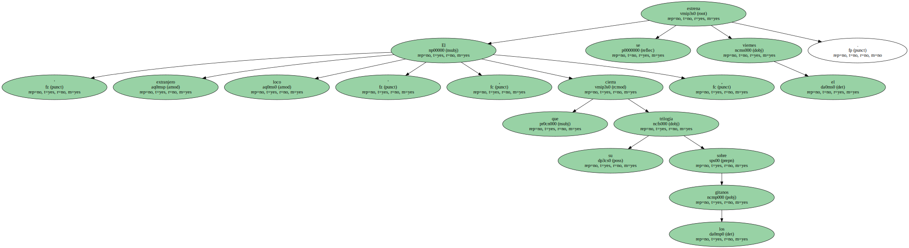El festival de Cannes Uncertain regard hace cinco años.
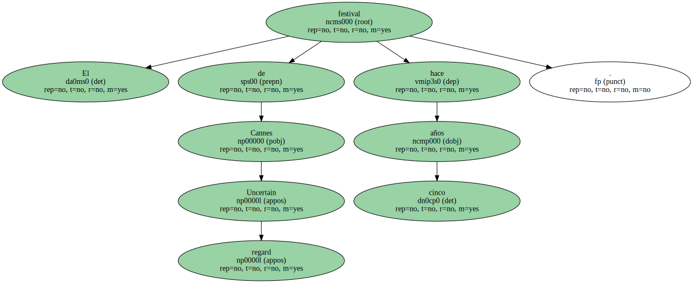El extranjero loco es un filme vitalista que recrea el acontecer cotidiano de una pequeña comunidad zíngara en Rumanía y va acompañada de una sugerente banda sonora con músicas de este colectivo.
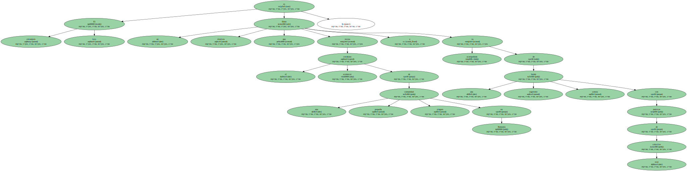" Me pregunto por qué tenemos miedo a culturas pequeñas , distintas a la nuestra , como pueda ser la de los zíngaros , los kurdos o los tuaregs " , dijo ayer Gatlif al presentar su película en Barcelona.
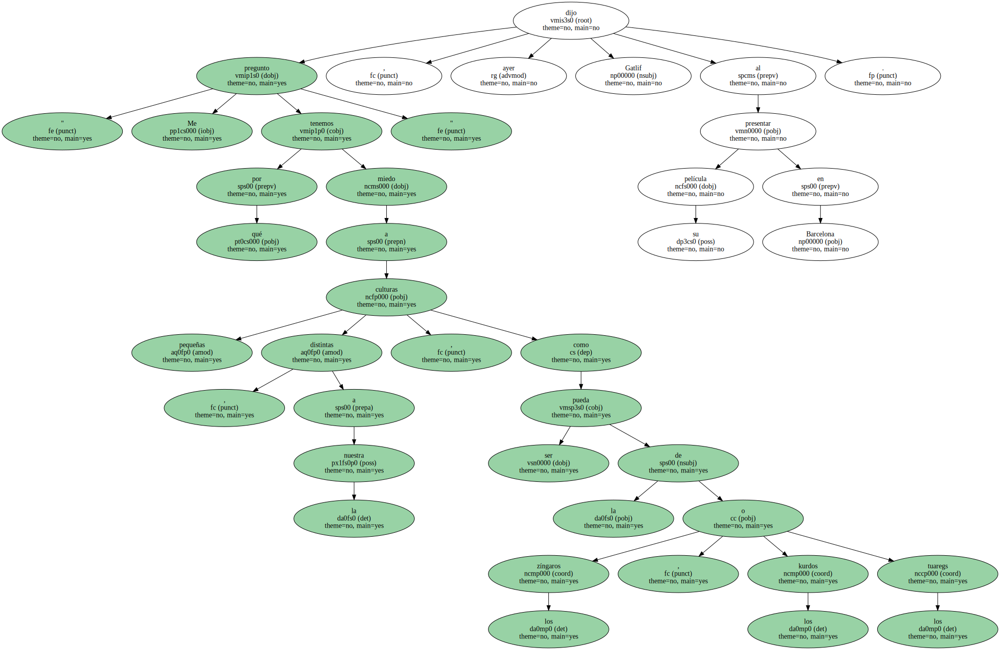Para el realizador y guionista , el protagonista masculino , Stéphane , " es muy interesante porque encarna la tolerancia , la aceptación de los demás ".
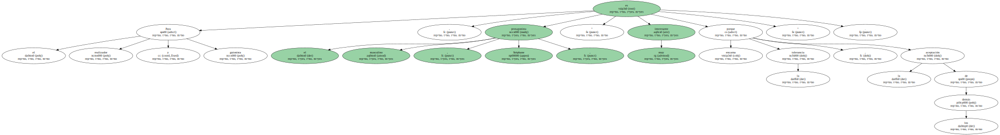La película narra la historia de un joven parisiense que marcha a Rumanía en busca de una cantante zíngara , ya que su fallecido padre escuchaba siempre sus canciones.
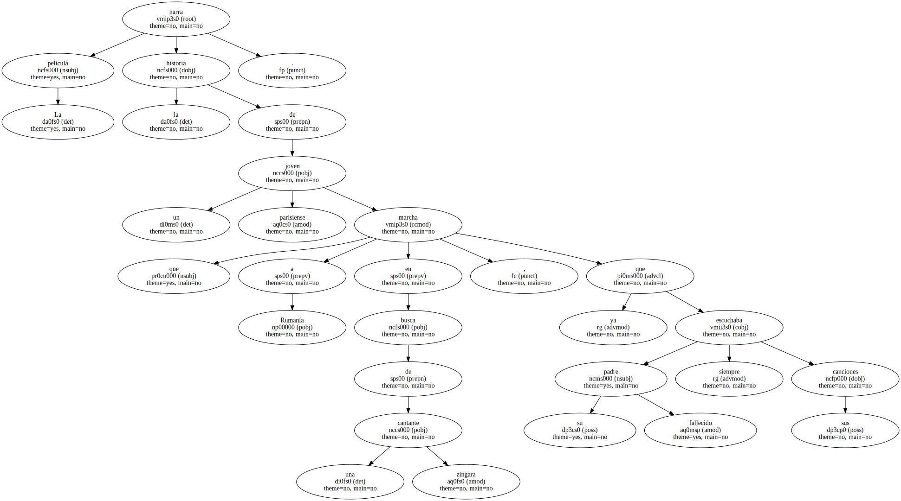Pudiera considerarse un viaje fallido , porque no encuentra su objetivo , pero el azar le conduce a una pequeña comunidad zíngara de la Rumanía rural ( Valaquia ) donde toma contacto con una realidad peculiar , en la que la amistad , la solidaridad , el amor , la pasión y la música no son valores adulterados.
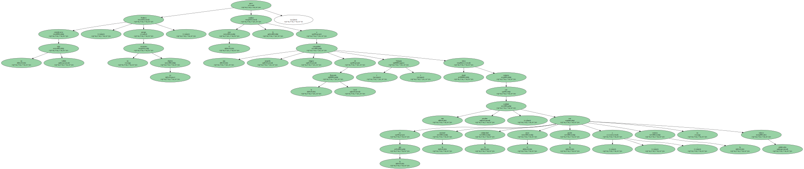Personaje clave.
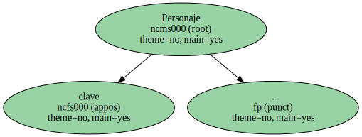Gatlif sintoniza con los zíngaros ( a los que distingue de los gitanos por ciertos matices ) porque también se sintió muy marginado al llegar a Francia.
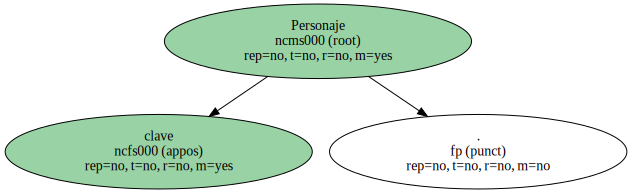Admitió que buena parte del impacto y éxito de esta película ( premiada en los festivales de Locarno y Montreal ) se debe al personaje de Izidore Serban , que se interpreta a sí mismo.
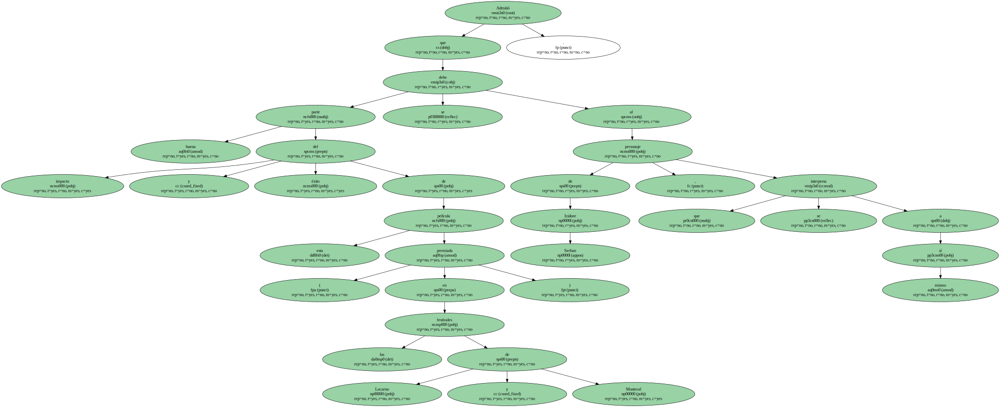" Él es un testimonio fiel ; sin su presencia , ésta hubiera sido una película más ".
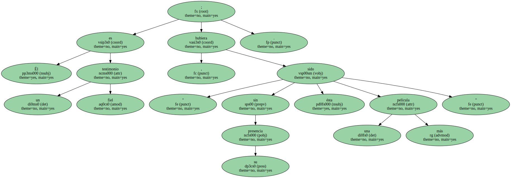El otro hallazgo del filme es la actriz Rona Hartner que , aparte de su impresionante ductilidad , aporta toda la frescura , vitalidad y picardía a su personaje.
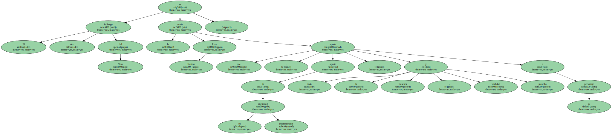Excepto ella y Romain Duris , el resto del reparto son los habitantes de ese pueblo rumano.

" El rodaje era cada día un peligro . El alcalde del lugar era un fascista que no quería que se rodara una película sobre zíngaros ; pensaba que desprestigiaba a Rumanía . Intentó constantemente paralizar el rodaje " , recordó Gatlif.
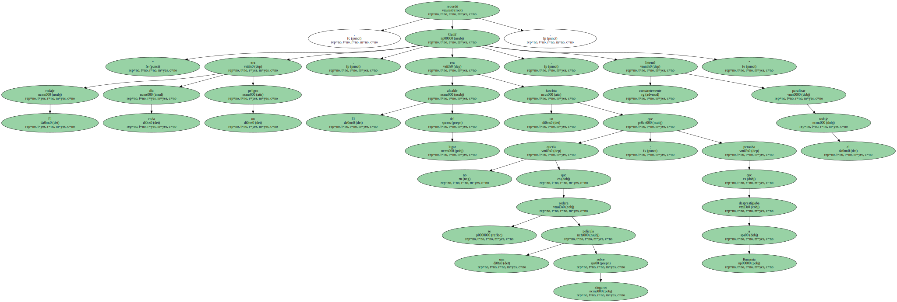La filmación duró tres meses , se utilizó sonido directo y sólo una cámara.
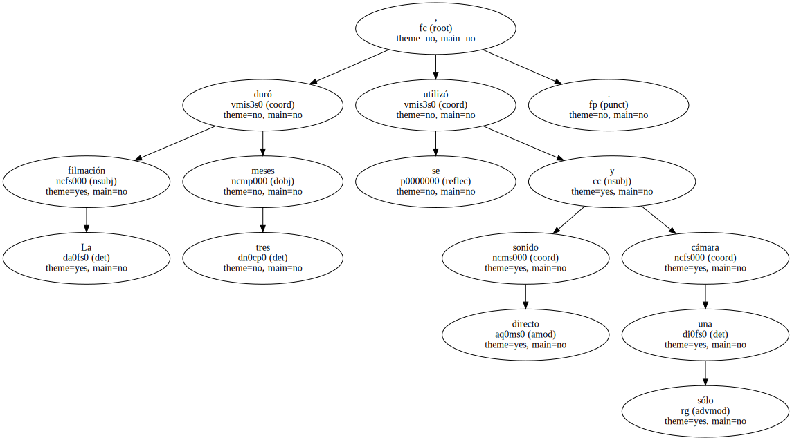Al preguntarle si había repetido muchas tomas , el realizador contestó : " La primera escena era la buena ".

Asombroso.
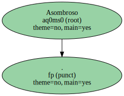